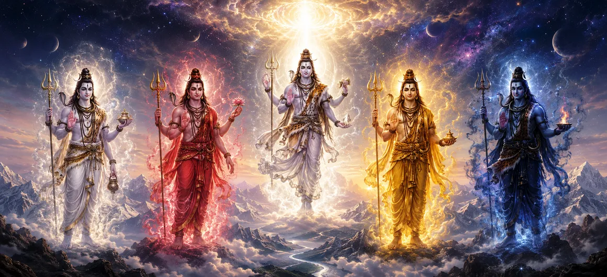

The Five Incarnations of the Supreme Brahman
Beginning the profound journey of the Shatarudra Samhita, the first chapter introduces the magnificent concept of the Pañcabrahma Avatāras—the five supreme incarnations and cosmic manifestations of Lord Shiva. These forms represent the foundational pillars through which the formless absolute takes shape to govern the universe.
The text expounds how Mahadeva, out of boundless compassion for creation, manifests into five distinct divine aspects. Each aspect oversees a specific cosmic function, maintaining the eternal balance of existence across all realms.
Understanding these five primary manifestations is essential for spiritual seekers, as they form the blueprint of divine action, grace, and ultimate liberation.
Chapter 1 Highlights
Supreme Brahman
Explains the transition of the formless absolute into active cosmic forms.
The Five Faces
Introduces Sadyojāta, Vāmadeva, Aghora, Tatpuruṣa, and Īśāna.
Cosmic Functions
Outlines creation, preservation, destruction, concealment, and grace.
Divine Authority
Demonstrates Shiva's supreme lordship over all celestial forces.
Grace & Liberation
Highlights how these manifestations guide souls toward spiritual freedom.
Foundation of Samhita
Sets the stage for exploring the extensive Rudra incarnations in upcoming chapters.
Core Topics in This Chapter
- 01 Prologue to the Shatarudra Samhita →
- 02 The Philosophy of Pañcabrahma →
- 03 Sadyojāta: The Form of Creation →
- 04 Vāmadeva: The Form of Preservation →
- 05 Aghora: The Form of Transformation →
- 06 Tatpuruṣa: The Form of Concealment →
- 07 Īśāna: The Form of Grace and Liberation →
- 08 The Unity Behind the Five Manifestations →
- 09 Meditating on the Pañcabrahma Aspects →
- 10 Transition to the Eight Forms of Shiva →
Prologue to the Shatarudra Samhita
The Shatarudra Samhita opens with grand reverence to Lord Shiva, setting the stage for exploring his innumerable glorious incarnations and fierce Rudra aspects. This section bridges cosmological principles with legendary narratives.
Sages inquire about the true nature of Mahadeva's manifestations, prompting a detailed exposition on how the Supreme Brahman assumes multiple forms to uphold cosmic order.
Chapter 1 establishes that every incarnation of Shiva is fully divine, non-different from the ultimate reality, and intended to guide souls toward spiritual awakening.
The Philosophy of Pañcabrahma
The scripture explains the profound doctrine of Pañcabrahma. In ancient Vedic tradition, the supreme formless reality expresses itself through five distinct faces or energies, known as the Pañcabrahma.
These five aspects are not separate entities, but five dynamic expressions of the one supreme consciousness operating simultaneously across the cosmos.
Meditation upon these forms enables yogis and devotees to transcend worldly illusions and perceive the divine fabric underlying all existence.
Sadyojāta: The Form of Creation
The first of the five incarnations is Sadyojāta, representing the western face of Shiva and presiding over the principle of creation and material manifestation.
Sadyojāta embodies pure birth, new beginnings, and the pristine innocence of emerging life. It is the creative spark that initiates cycles of manifestation in every cosmic epoch.
Devotees meditating on Sadyojāta seek renewal of mind, purity of intent, and divine assistance in constructive earthly endeavors.
Vāmadeva: The Form of Preservation
Vāmadeva represents the northern face of Shiva, embodying the nurturing and preserving aspect of the supreme Brahman that sustains all living beings.
This incarnation governs growth, healing, and the gentle maintenance of cosmic harmony, ensuring that creation thrives under divine benevolence.
Worship of Vāmadeva brings inner peace, emotional balance, and protection against disruptive forces in life.
Aghora: The Form of Transformation
The southern face of Shiva is Aghora, symbolizing the fierce yet transformative power responsible for dissolving negativity and clearing obstacles.
Despite its terrifying appearance to the uninitiated, Aghora is deeply compassionate, destroying ignorance, ego, and karmic bonds to liberate the soul.
Meditating on Aghora helps seekers conquer fear, eliminate inner darkness, and undergo profound spiritual transformation.
Tatpuruṣa: The Form of Concealment
Tatpuruṣa represents the eastern face of Shiva, governing the cosmic principle of Tirobhava (concealment or the veil of illusion).
This aspect maintains the play of worldly experience by veiling supreme truth, allowing souls to undergo individual journeys of learning through karma.
Understanding Tatpuruṣa teaches seekers to look beyond superficial appearances and seek the hidden divine reality within all things.
Īśāna: The Form of Grace and Liberation
The upper face of Shiva is Īśāna, looking toward the heavens and embodying Anugraha (divine grace) and supreme liberation (Moksha).
Īśāna is the pinnacle of the Pañcabrahma forms, granting spiritual enlightenment, dissolving all illusions, and uniting the individual soul with the absolute.
Devotees seeking ultimate emancipation meditate upon Īśāna to receive the boundless grace of Lord Shiva.
The Unity Behind the Five Manifestations
Chapter 1 emphasizes that while these five faces have distinct functions, they are inseparable parts of a single indivisible Supreme Brahman.
Together, creation, preservation, destruction, illusion, and grace form the complete wheel of cosmic existence orchestrated by Mahadeva.
Recognizing this unity prevents devotees from dividing divine energies and fosters a holistic approach to spiritual devotion.
Meditating on the Pañcabrahma Aspects
The scripture prescribes specific contemplation methods for aligning the mind with the five Pañcabrahma energies through sacred mantras and visualization.
Chanting mantras dedicated to Sadyojāta, Vāmadeva, Aghora, Tatpuruṣa, and Īśāna purifies the five elements within the human body (earth, water, fire, air, and ether).
This inner purification transforms the practitioner's physical vessel into a living temple of Lord Shiva.
Transition to the Eight Forms of Shiva
Having established the foundational five cosmic incarnations of the Supreme Brahman, Chapter 1 concludes by preparing the reader for the next phase.
The text sets up a smooth transition to Chapter 2, which expands upon these cosmic principles by detailing the eight distinct physical and elemental forms of Shiva known as Śivāṣṭamūrti.
This progressive revelation allows seekers to comprehend both the subtle metaphysical nature and the tangible universal presence of Lord Shiva.
Key Teachings of Chapter 1
Formless to Form
The absolute Brahman manifests into dynamic forms out of love for creation.
Fivefold Governance
Creation, preservation, destruction, illusion, and grace are unified in Shiva.
Elemental Harmony
The Pañcabrahma forms govern the five fundamental elements of the universe.
Transformative Power
Fierce aspects like Aghora work to eliminate ignorance and ego.
Ultimate Grace
Īśāna leads seekers directly toward supreme spiritual liberation.
Holistic Devotion
Recognizing unity across all forms deepens true spiritual realization.
Spiritual Reflection
Chapter 1 of the Shatarudra Samhita opens our eyes to the grand architecture of divine manifestation. By introducing the Pañcabrahma Avatāras, the text reveals that Lord Shiva is not a distant deity, but the very essence of creation, preservation, transformation, concealment, and grace operating within and around us. Each of the five faces represents an essential facet of cosmic and inner evolution. When we meditate upon these forms, we learn to embrace change through Aghora, find nurture through Vāmadeva, experience new beginnings through Sadyojāta, look beyond illusions through Tatpuruṣa, and surrender to divine liberation through Īśāna. This foundational chapter sets a majestic tone for understanding the infinite glory of Mahadeva.
Living the Message of Chapter 1
Applying the wisdom of Chapter 1 in daily life involves recognizing divine order in all changing circumstances. When facing new beginnings, embrace them with the pure intent of Sadyojāta.
During times of challenge or inner turmoil, view difficulties as transformative opportunities under Aghora to burn away ego and bad habits. Cultivate patience, grace, and compassion in all interactions, reflecting the benevolence of Vāmadeva and Īśāna.
By honoring the five elements within your body as expressions of Shiva's faces, you transform mundane existence into a continuous spiritual offering.
Key Spiritual Concepts
The five supreme faces and cosmic manifestations of Lord Shiva.
The western face of Shiva presiding over creation and new births.
The northern face embodying preservation, healing, and nourishment.
The southern face representing transformative power and destruction of ignorance.
The eastern face governing concealment and the veil of worldly illusion.
The upper face embodying supreme divine grace and ultimate liberation.
Chapter Summary
Shatarudra Samhita Chapter 1 introduces the magnificent philosophy of the Pañcabrahma Avatāras—the five supreme incarnations and cosmic faces of Lord Shiva. It explains how the formless absolute Brahman divides into five dynamic aspects: Sadyojāta (creation), Vāmadeva (preservation), Aghora (transformation), Tatpuruṣa (concealment), and Īśāna (grace). Each face governs a fundamental cosmic function and elemental force, working in perfect unity to orchestrate the wheel of existence. The chapter emphasizes meditation upon these forms for inner purification and spiritual awakening, concluding with a seamless transition to Chapter 2, which explores the eight physical and elemental forms of Shiva known as Śivāṣṭamūrti.
Frequently Asked Questions
① What is the primary topic of Shatarudra Samhita Chapter 1?
The primary topic covers the five major incarnations of the supreme Brahman (Pañcabrahma Avatāras) through which Lord Shiva governs creation, preservation, destruction, obscuration, and grace.
② What are the Pañcabrahma forms of Lord Shiva?
The five forms correspond to Sadyojāta, Vāmadeva, Aghora, Tatpuruṣa, and Īśāna, representing the five sacred faces of Lord Shiva.
③ How do these five forms relate to cosmic functions?
Each face governs one of the five cosmic acts: creation, maintenance, dissolution, concealment of truth, and bestowing ultimate liberation.
④ Why is Shatarudra Samhita significant in the Shiva Purana?
It focuses extensively on the manifold incarnations, glorious aspects, and Rudra forms of Lord Shiva that embody supreme spiritual power.
⑤ How does understanding Pañcabrahma help a devotee?
It deepens spiritual realization, helping seekers perceive the omnipresent divine energy operating through all dimensions of the universe.
⑥ How does Chapter 1 connect to Chapter 2?
Chapter 1 introduces the foundational five supreme Brahman forms, while Chapter 2 expands upon these by detailing the eight specific physical and cosmic forms of Shiva (Śivāṣṭamūrti).
“From the formless absolute to the five sacred faces, Lord Shiva manifests across the cosmos to sustain, transform, and liberate all souls.”
Continue Through Shatarudra Samhita
Chapter 1 details the five supreme incarnations of the Brahman. With these foundational cosmic manifestations in mind, continue into Chapter 2 to examine the eight distinct forms of Shiva (Śivāṣṭamūrti).